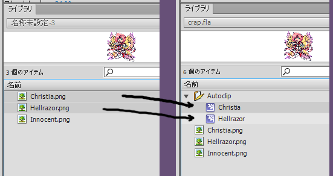

Encapsulate in Movie Clip v1.5
Description | 説明
Takes selected library items (bitmaps, graphics, and movie clips) and centers them in a new movie clip each.
ライブラリの選択範囲のアイテム（ビットマップ、グラフィック、ムービークリップ）を新しいムービークリップの中に置きます。複数のアイテムも選択できます。

Installation | インストール
- Right click the download button and "Save As." If you just click, it will open as text in your browser.
- It should be saved to your Flash commands directory. Normally, it is in this location: C:\Users\joseph.jacir\AppData\Local\Adobe\Flash CS6\ja_JP\Configuration\Commands - replace the bolded portion with your own PC login.
- After that, the script will appear in your commands menu at the top of the Flash environment. You can run it by clicking there.
- You can also assign a hotkey to it (I use Ctrl+Alt+E).
- 上記のボタンを右クリックして、「名前をかけて保存」クリックしてください。左クリックすれば、スクリプトはブラウザーにテキストで開きます。
- フラッシュのコマンドフォルダに保存した方がいいです。普通には、このフォルダになります: C:\Users\joseph.jacir\AppData\Local\Adobe\Flash CS6\ja_JP\Configuration\Commands。太字を自分のユーザー名を変わってください。
- それに、スクリプトはフラッシュのコマンドのメニュに現出します。あそこにクリックすると、実行します。
- キーボードショートカットを充てられる。(私はCtrl+Alt+Eを使っています。)